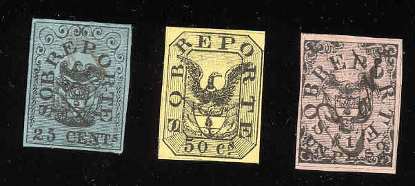
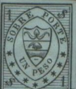
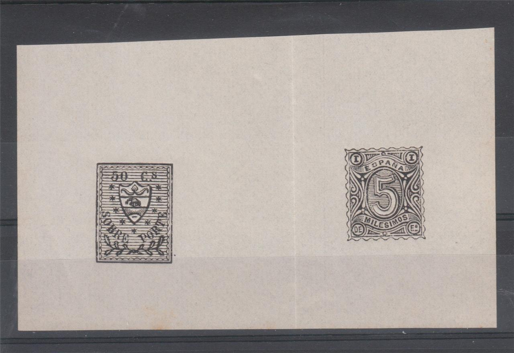
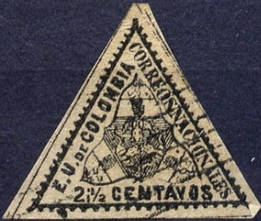
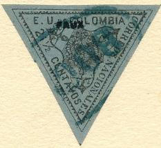
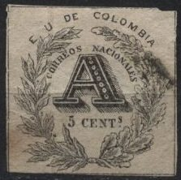
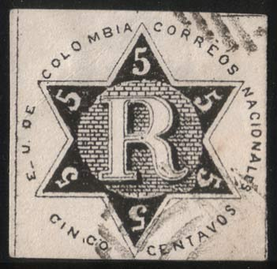
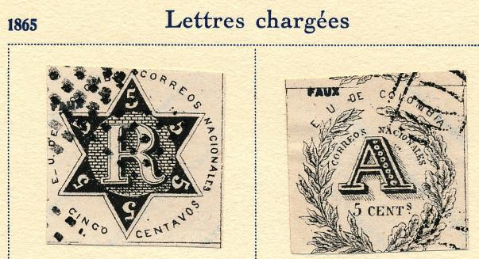
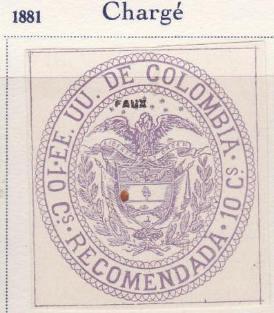
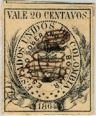

Fournier forgeries; I've also seen them cancelled.
Return To Catalogue - Colombia - Colombia postal stationery and insured letter stamps
Note: on my website many of the
pictures can not be seen! They are of course present in the
catalogue;
contact me if you want to purchase it.

25 c black on blue 50 c black on yellow 1 P black on red
Value of the stamps |
|||
vc = very common c = common * = not so common ** = uncommon |
*** = very uncommon R = rare RR = very rare RRR = extremely rare |
||
| Value | Unused | Used | Remarks |
| 25 c | R | R | |
| 50 c | R | R | |
| 1 P | R | R | |
There exist rather deceptive forgeries of the 50 c and 1 P values (offered by Fournier). I don't know the distinguishing characteristics. These forgeries can be found in 'The Fournier Album of Philatelic Forgeries'.
Fournier forgeries; I've also seen them cancelled.
A forgery of the 50 c, but in the design of the 25 c is described in Album Weeds. The next image shows this forgery, together with a similar forgery of the 1 P value and the corresponding forgery of the 25 c (which is in the correct design, but the ornaments in the central top part are different when compared to a genuine stamp).

Forgery of the 25 c and forgeries of the 50 c and 1 P in the
wrong design (that of the 25 c).

(Another forgery of the 25 c in the wrong colour: blue instead of
black on blue!)

And a 50 c forgery in the color orange.
This could be a forgery of the 25 c as well.
Furthermore Album Weeds mentions 3 more values (25 c, 50 c and 1 P) in completely different designs, these are bogus issues (sorry, no image of the 25 c and 50 c available yet):

In Le Timbre Poste of Moens No 138, page 44 (1874) Moens expresses serious doubts about the authenticity of these stamps. He admits having them listed first on 15 January 1868 (25 c and 50 c of the same set as well). He also has some very critical remarks about the stamp dealer Pierre Mahé, apparently not one of his friends....

A mystery sheetlet with a bogus postage due stamp of Colombia and
a non-issued stamp of Spain.
Scans from the John Edward Gray 'The Illustrated Catalogue of
Postage Stamps' of 1870 on page 133 and 134.
Scan from the catalogue of Placido Ramon de
Torres "Album Illustrado para Sellos de Correo" of
1879, page 203. Note that some of the left stars in the 50 cs
value have a white center now.
2 1/2 c black on lilac
Value of the stamps |
|||
vc = very common c = common * = not so common ** = uncommon |
*** = very uncommon R = rare RR = very rare RRR = extremely rare |
||
| Value | Unused | Used | Remarks |
| 2 1/2 c | *** | *** | |
There are at least three different forgeries of this stamp. I've been told that the next stamps are a reprint and two forgeries:
Left reprint, right and middle forgeries
In the forgery at the right hand side the inscription is "2 1/2" instead of "2 i 1/2". There should be a dot behind the "E" and a dash behind the "U" of "EU". In the 'reprint' the "S" of "NACIONALES" does not approach the bottom lines constisting of half circles as much as in the stamp shown above.

Another rather crudely done forgery
Very crude forgery with '21' instead of '2 i'. This is the second
forgery of Album Weeds.
In a 'Fournier Album of Philatelic Forgeries' I have seen a Fournier forgery of this stamp on blue paper:



(Genuine stamps)
5 c black 'A' 5 c black 'R'
Value of the stamps |
|||
vc = very common c = common * = not so common ** = uncommon |
*** = very uncommon R = rare RR = very rare RRR = extremely rare |
||
| Value | Unused | Used | Remarks |
| 5 c 'A' | R | R | |
| 5 c 'R' | R | R | |
Forgeries of these stamps are known to have been made by Zechmeyer, Sartori, Spiro and others. More useful information: http://www.copaphil.org/Copacarta%20Vol%201-20/VOLUME%2011/40_VOLUME.pdf
For this and other information on the forgeries and genuine stamps see the website of Bill Claghorn: http://www.geocities.com/claghorn1p/Colombia/ColF2.htm.
The genuine stamps should have the following characteristics:
1) The dot below the "S" in "CENT.S" is
nearer to the "T" and not exactly below the
"S"
2) There are dots after the "E" and "U" of
"E. U. DE COLOMBIA".
3) A leaf touches the "C" or "CORREOS" and
almost touches the first "R" of this same word.
4) There are eight clearly distinct berries on the left branch.
5) The "5" of "5 CENT" doesn't touch the
branches.
6) The white lines around the "A" are thin

(Dot exactly under "S" after "CENT").
The above forgery was also offered by Fournier in his 1914 pricelist (they exist with "FAUX" overprint from a Fournier Album). It was actually made by the forger Spiro though. The second stamp has a typical Spiro cancel, they also exist cancelled with dots. There are no dots behind "E" or "U".
Image taken from a Fournier Album.

(Forgery obtained thanks to Bill Claghorn's site)
This forgery is printed more black and blotchy than the genuine stamps. It is said to have been made by the stamp forger Zechmeyer around 1866. In my view, it always has a dot on top of the "T" of "CENT". See: http://www.copaphil.org/Copacarta%20Vol%201-20/VOLUME%2011/40_VOLUME.pdf

The genuine stamps should have:
1) A very short dash (almost a dot) after the "E" of
"E.U."
2) The "R" doesn't fit inside the circle and the circle
is made bigger at the lower right hans side. The tail of the
"R" is just outside the circle.
3) The line inside the "R" is squared off in the upper
left corner.
4) The "5" in the lower right hand side is touching the
bricks of the center.
Album Weeds mentions 5 forgeries of the "R" stamp. A forgery with "NATIONALES" (with "T" instead of "C" exists).

Spiro forgery; also sold by Fournier. This forgery also exists
with a cancel consisting of a pattern of dots. The "-"
behind the "E" of "E-U." is too long and the
"S" of "NACIONALES" is placed too far away
from the star.


Another forgery with the lettering too 'fat' and the first
"N" of "NACIONALES" touching the central
star. I've also seen it with a typical 'Spiro' cancel (as on the
other forgery shown above). Note that the "V" of
"CENTAVOS" resembles an inverted "A".
(Other forgery)
I have my doubts about the next stamp, forgery?:

2 1/2 c black on lilac
Value of the stamps |
|||
vc = very common c = common * = not so common ** = uncommon |
*** = very uncommon R = rare RR = very rare RRR = extremely rare |
||
| Value | Unused | Used | Remarks |
| 2 1/2 c | *** | *** | |
Reprints possibly exist, but I don't know the distinguishing characteristics.

5 c black ("A")
5 c black ("R")
Different types with different background patterns seem to exist (lines or dotted), but are probably due to the wear of the printing plate.
Value of the stamps |
|||
vc = very common c = common * = not so common ** = uncommon |
*** = very uncommon R = rare RR = very rare RRR = extremely rare |
||
| Value | Unused | Used | Remarks |
| 5 c 'A' | *** | *** | |
| 5 c 'R' | *** | *** | |
There are at least two forgeries of the "A" stamp and four of the "R" stamp.

(Michelsen reprints?)
I've heard of so-called Michelsen reprints. They have a plain background behind the number instead of a lined background (both the "A" and "R" stamp). I think the above stamp is such a Michelsen reprint.

Another 'A' forgery; there is a large dot just outside the design
to the top-left of the "C" of "CORREOS". The
"C" of "ANOTACION" looks like a
"G". This forgery is the first one described in Album
Weeds.
A forgery of the "R" stamp.

10 c violet
Value of the stamps |
|||
vc = very common c = common * = not so common ** = uncommon |
*** = very uncommon R = rare RR = very rare RRR = extremely rare |
||
| Value | Unused | Used | Remarks |
| 10 c | *** | *** | |
In 'The Fournier Album of Philatelic Forgeries' a Fournier forgery of this stamp can be found. It is rather deceptive. I don't know the distinguishing characteristics.

Fournier forgery. Fournier also made cancelled forgeries of the
above stamp.
Forgery with the eagle facing in the other direction! It was
apparently based on an illustration from a Schaubek Album (or the
other way around?).
10 c red on yellow
Value of the stamps |
|||
vc = very common c = common * = not so common ** = uncommon |
*** = very uncommon R = rare RR = very rare RRR = extremely rare |
||
| Value | Unused | Used | Remarks |
| 10 c | *** | ** | |

2 1/2 c black on grey 2 1/2 c blue on red (1892, different design) 5 c violet (1902, different design)
Value of the stamps |
|||
vc = very common c = common * = not so common ** = uncommon |
*** = very uncommon R = rare RR = very rare RRR = extremely rare |
||
| Value | Unused | Used | Remarks |
| 2 1/2 c black on grey | c | c | |
| 2 1/2 c blue on red | c | c | |
| 5 c | * | c | |

(Reduced size, picture obtained from
http://berg.heim.at/kaprun/430320/01-Lehr/01/06/s_2.htm)
10 c red 10 c brown on brown (1892)
Value of the stamps |
|||
vc = very common c = common * = not so common ** = uncommon |
*** = very uncommon R = rare RR = very rare RRR = extremely rare |
||
| Value | Unused | Used | Remarks |
| 10 c red | * | * | |
| 10 c brown on brown | ** | ** | |

5 c red
Value of the stamps |
|||
vc = very common c = common * = not so common ** = uncommon |
*** = very uncommon R = rare RR = very rare RRR = extremely rare |
||
| Value | Unused | Used | Remarks |
| 5 c | * | * | |
Examples:


5 c blue (1904) 10 c blue
Value of the stamps |
|||
vc = very common c = common * = not so common ** = uncommon |
*** = very uncommon R = rare RR = very rare RRR = extremely rare |
||
| Value | Unused | Used | Remarks |
| 5 c | ** | ** | |
| 10 c | * | * | |

10 c violet (different design) 10 c violet (1904) 20 c red on blue 20 c blue on blue
Value of the stamps |
|||
vc = very common c = common * = not so common ** = uncommon |
*** = very uncommon R = rare RR = very rare RRR = extremely rare |
||
| Value | Unused | Used | Remarks |
| 10 c | *** | *** | Different design |
| 10 c | *** | *** | |
| 20 c red on blue | * | * | |
| 20 c blue on blue | * | * | |
10 c lilac
Value of the stamps |
|||
vc = very common c = common * = not so common ** = uncommon |
*** = very uncommon R = rare RR = very rare RRR = extremely rare |
||
| Value | Unused | Used | Remarks |
| 10 c | ** | * | |
(Sorry, no picture available yet)
5 c blue
Value of the stamps |
|||
vc = very common c = common * = not so common ** = uncommon |
*** = very uncommon R = rare RR = very rare RRR = extremely rare |
||
| Value | Unused | Used | Remarks |
| 5 c | ** | * | |
5 c orange and green
Value of the stamps |
|||
vc = very common c = common * = not so common ** = uncommon |
*** = very uncommon R = rare RR = very rare RRR = extremely rare |
||
| Value | Unused | Used | Remarks |
| 5 c | *** | *** | |
10 c red and black
Value of the stamps |
|||
vc = very common c = common * = not so common ** = uncommon |
*** = very uncommon R = rare RR = very rare RRR = extremely rare |
||
| Value | Unused | Used | Remarks |
| 10 c | R | R | |

2 c brown 5 c green
Value of the stamps |
|||
vc = very common c = common * = not so common ** = uncommon |
*** = very uncommon R = rare RR = very rare RRR = extremely rare |
||
| Value | Unused | Used | Remarks |
| 2 c | ** | ** | |
| 5 c | ** | ** | |
(Sorry, no picture available)
4 c green and blue 10 c blue
Value of the stamps |
|||
vc = very common c = common * = not so common ** = uncommon |
*** = very uncommon R = rare RR = very rare RRR = extremely rare |
||
| Value | Unused | Used | Remarks |
| 4 c | *** | *** | With inverted center: RRR |
| 10 c | ** | c | |
(Sorry, no picture available yet)
2 c red 'RETARDO' 2 c red 'RETARDO' (different stamp) 2 c red 'Retardo'
Value of the stamps |
|||
vc = very common c = common * = not so common ** = uncommon |
*** = very uncommon R = rare RR = very rare RRR = extremely rare |
||
| Value | Unused | Used | Remarks |
| 2 c | R | R | 'RETARDO' |
| 2 c | R | R | 'RETARDO' (different stamp) |
| 2 c | R | *** | 'Retardo' |
In 1921 some more stamps were overprinted with "Retardo 1921" (5 values); these overprints are R to RR (forged overprints exist!).
(Sorry, no picture available yet)
5 c green
Value of the stamps |
|||
vc = very common c = common * = not so common ** = uncommon |
*** = very uncommon R = rare RR = very rare RRR = extremely rare |
||
| Value | Unused | Used | Remarks |
| 5 c | ** | ** | |
From 1881 to 1906 telegraph stamps (about 50 different stamps) were issued in Colombia.
Arms (different types) 5 c violet 5 c blue (1882, 2 types '5's different) 10 c green 10 c red (1882, 2 types, '10's different) 20 c red 20 c blue (1882) 20 c brown (1886) 50 c blue on blue 50 c violet (1882, 2 types) 1 P black on yellow (imperforate 1901 or perforated 1905) Portrait of person 1 P brown on yellow 1 P black on yellow 1 P black on green (1882)
5 c red (1891)
10 c brown on yellow ('CENTAVOS' written obliquely)
10 c brown (arms in circle, 1891)
10 c brown ('TELEGRAFOS NACIONALES' straight at the bottom, 1896)
10 c brown on yellow ('TELEGRAFOS' curved at the bottom,
imperforate 1901 or perforated 1902)
10 c brown on lilac (design as 10 c brown on yellow,
imperforate 1904 or perforated 1905)
20 c blue ('VEINTE CENTAVOS' wavy at the bottom)
20 c blue on blue ('VEINTE CENTAVOS' in ellipse at bottom, 1891)
20 c blue on green ('VEINTE CENTAVOS' in ellipse at bottom, 1891)
20 c blue on blue ('VEINTE CENTAVOS' in half circle at bottom,
imperforate 1901 or perforated 1905)
20 c blue on green ('VEINTE CENTAVOS' in half circle at bottom,
imperforate 1901 or perforated 1905)
20 c red on yellow ('VEINTE CENTAVOS' in half circle at bottom,
imperforate 1902 or perforated 1904)
20 c brown on yellow ('VEINTE CENTAVOS' in half circle at bottom, 1902)
20 c red on lilac ('TELEGRAFOS NACIONALES' horizontal in center, 1904)
40 c blue on lilac (1904)
50 c black on brown
50 c violet (perforated, 1902)
60 c brown on red (1904)
80 c red on blue (1904)
1 P green on green ('PESO' at the right in green, 1896)
1 P green on green ('PESO' at the right in white, 1896)
1 P red on red ('PESO' at the right in white,
imperforate or perforated, 1902)
1 P green on green ('PESO' in white at bottom center, 1904)
1 P blue on red ('PESO' in white at bottom center, 1906)
2 P violet on lilac (1904)
2 P red on green (1906, design as 1904 2 P stamp)
5 P brown on lilac (imperforate 1904 or perforated 1905)
5 P red on lilac (1906, design as 5 P 1904 stamp)
10 P blue on blue (imperforate 1904 or perforated 1905)
10 P red on blue (1906, design as 10 P 1904 stamp)
Typical pen cancels, this appears to be the most common cancel.

I've seen the values 5 c green and 5 c brown.
More information concerning these stamps can be found at: http://fuchs-online.com/colombia/express/express23.htm.
Examples, inscription "TIMBRE NACIONAL":




Some airmail stamps were issued in 1920, sometimes referred to as 'Cartoon issue', examples:
(Probably genuine airmail stamps)
Many of these airmail stamps are known to have been forged. These stamps are rare to extremely rare.
10 c yellow 15 c blue 30 c black on red 30 c red 50 c green
Value of the stamps |
|||
vc = very common c = common * = not so common ** = uncommon |
*** = very uncommon R = rare RR = very rare RRR = extremely rare |
||
| Value | Unused | Used | Remarks |
| 10 c | R | R | |
| 15 c | RR | RR | |
| 30 c black on red | R | R | |
| 30 c red | RR | R | |
| 50 c | R | R | |
Several surcharges exists (also forged!). This company issued more stamps in 1921 and later.


{kind=link}
{kind=link}
{kind=link}
{kind=link}
{kind=link}
{kind=link}